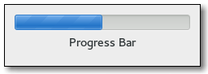

Gtk.ProgressBar¶
Example¶

- Subclasses:
None
Methods¶
- Inherited:
Gtk.Widget (278), GObject.Object (37), Gtk.Buildable (10), Gtk.Orientable (2)
- Structs:
class |
|
|
|
|
|
|
|
|
|
|
|
|
|
|
|
|
|
|
|
|
Virtual Methods¶
- Inherited:
Properties¶
- Inherited:
Name |
Type |
Flags |
Short Description |
|---|---|---|---|
r/w/en |
The preferred place to ellipsize the string, if the progress bar does not have enough room to display the entire string, if at all. |
||
r/w/en |
The fraction of total work that has been completed |
||
r/w/en |
Invert the direction in which the progress bar grows |
||
r/w/en |
The fraction of total progress to move the bouncing block when pulsed |
||
r/w/en |
Whether the progress is shown as text. |
||
r/w |
Text to be displayed in the progress bar |
Style Properties¶
- Inherited:
Name |
Type |
Default |
Flags |
Short Description |
|---|---|---|---|---|
|
|
d/r/w |
Minimum horizontal height of the progress bar |
|
|
|
d/r/w |
The minimum horizontal width of the progress bar |
|
|
|
d/r/w |
The minimum vertical height of the progress bar |
|
|
|
d/r/w |
The minimum vertical width of the progress bar |
|
|
|
d/r/w |
Extra spacing applied to the width of a progress bar. |
|
|
|
d/r/w |
Extra spacing applied to the height of a progress bar. |
Signals¶
- Inherited:
Fields¶
- Inherited:
Name |
Type |
Access |
Description |
|---|---|---|---|
parent |
r |
Class Details¶
- class Gtk.ProgressBar(**kwargs)¶
- Bases:
- Abstract:
No
- Structure:
The
Gtk.ProgressBaris typically used to display the progress of a long running operation. It provides a visual clue that processing is underway. TheGtk.ProgressBarcan be used in two different modes: percentage mode and activity mode.When an application can determine how much work needs to take place (e.g. read a fixed number of bytes from a file) and can monitor its progress, it can use the
Gtk.ProgressBarin percentage mode and the user sees a growing bar indicating the percentage of the work that has been completed. In this mode, the application is required to callGtk.ProgressBar.set_fraction() periodically to update the progress bar.When an application has no accurate way of knowing the amount of work to do, it can use the
Gtk.ProgressBarin activity mode, which shows activity by a block moving back and forth within the progress area. In this mode, the application is required to callGtk.ProgressBar.pulse() periodically to update the progress bar.There is quite a bit of flexibility provided to control the appearance of the
Gtk.ProgressBar. Functions are provided to control the orientation of the bar, optional text can be displayed along with the bar, and the step size used in activity mode can be set.- CSS nodes
progressbar[.osd] ├── [text] ╰── trough[.empty][.full] ╰── progress[.pulse]Gtk.ProgressBarhas a main CSS node with name progressbar and subnodes with names text and trough, of which the latter has a subnode named progress. The text subnode is only present if text is shown. The progress subnode has the style class .pulse when in activity mode. It gets the style classes .left, .right, .top or .bottom added when the progress ‘touches’ the corresponding end of theGtk.ProgressBar. The .osd class on the progressbar node is for use in overlays like the one Epiphany has for page loading progress.- classmethod new()[source]¶
- Returns:
- Return type:
Creates a new
Gtk.ProgressBar.
- get_ellipsize()[source]¶
- Returns:
- Return type:
Returns the ellipsizing position of the progress bar. See
Gtk.ProgressBar.set_ellipsize().Added in version 2.6.
- get_fraction()[source]¶
- Returns:
a fraction from 0.0 to 1.0
- Return type:
Returns the current fraction of the task that’s been completed.
- get_inverted()[source]¶
-
Gets the value set by
Gtk.ProgressBar.set_inverted().
- get_pulse_step()[source]¶
- Returns:
a fraction from 0.0 to 1.0
- Return type:
Retrieves the pulse step set with
Gtk.ProgressBar.set_pulse_step().
- get_show_text()[source]¶
-
Gets the value of the
Gtk.ProgressBar:show-textproperty. SeeGtk.ProgressBar.set_show_text().Added in version 3.0.
- get_text()[source]¶
- Returns:
text, or
None; this string is owned by the widget and should not be modified or freed.- Return type:
Retrieves the text that is displayed with the progress bar, if any, otherwise
None. The return value is a reference to the text, not a copy of it, so will become invalid if you change the text in the progress bar.
- pulse()[source]¶
Indicates that some progress has been made, but you don’t know how much. Causes the progress bar to enter “activity mode,” where a block bounces back and forth. Each call to
Gtk.ProgressBar.pulse() causes the block to move by a little bit (the amount of movement per pulse is determined byGtk.ProgressBar.set_pulse_step()).
- set_ellipsize(mode)[source]¶
- Parameters:
mode (
Pango.EllipsizeMode) – aPango.EllipsizeMode
Sets the mode used to ellipsize (add an ellipsis: “…”) the text if there is not enough space to render the entire string.
Added in version 2.6.
- set_fraction(fraction)[source]¶
- Parameters:
fraction (
float) – fraction of the task that’s been completed
Causes the progress bar to “fill in” the given fraction of the bar. The fraction should be between 0.0 and 1.0, inclusive.
- set_inverted(inverted)[source]¶
-
Progress bars normally grow from top to bottom or left to right. Inverted progress bars grow in the opposite direction.
- set_pulse_step(fraction)[source]¶
- Parameters:
fraction (
float) – fraction between 0.0 and 1.0
Sets the fraction of total progress bar length to move the bouncing block for each call to
Gtk.ProgressBar.pulse().
- set_show_text(show_text)[source]¶
- Parameters:
show_text (
bool) – whether to show text
Sets whether the progress bar will show text next to the bar. The shown text is either the value of the
Gtk.ProgressBar:textproperty or, if that isNone, theGtk.ProgressBar:fractionvalue, as a percentage.To make a progress bar that is styled and sized suitably for containing text (even if the actual text is blank), set
Gtk.ProgressBar:show-texttoTrueandGtk.ProgressBar:textto the empty string (notNone).Added in version 3.0.
- set_text(text)[source]¶
-
Causes the given text to appear next to the progress bar.
If text is
NoneandGtk.ProgressBar:show-textisTrue, the current value ofGtk.ProgressBar:fractionwill be displayed as a percentage.If text is non-
NoneandGtk.ProgressBar:show-textisTrue, the text will be displayed. In this case, it will not display the progress percentage. If text is the empty string, the progress bar will still be styled and sized suitably for containing text, as long asGtk.ProgressBar:show-textisTrue.
Property Details¶
- Gtk.ProgressBar.props.ellipsize¶
- Name:
ellipsize- Type:
- Default Value:
- Flags:
The preferred place to ellipsize the string, if the progress bar does not have enough room to display the entire string, specified as a
Pango.EllipsizeMode.Note that setting this property to a value other than
Pango.EllipsizeMode.NONEhas the side-effect that the progress bar requests only enough space to display the ellipsis (”…”). Another means to set a progress bar’s width isGtk.Widget.set_size_request().Added in version 2.6.
- Gtk.ProgressBar.props.fraction¶
- Name:
fraction- Type:
- Default Value:
0.0- Flags:
The fraction of total work that has been completed
- Gtk.ProgressBar.props.inverted¶
- Name:
inverted- Type:
- Default Value:
- Flags:
Invert the direction in which the progress bar grows
- Gtk.ProgressBar.props.pulse_step¶
- Name:
pulse-step- Type:
- Default Value:
0.1- Flags:
The fraction of total progress to move the bouncing block when pulsed
- Gtk.ProgressBar.props.show_text¶
- Name:
show-text- Type:
- Default Value:
- Flags:
Sets whether the progress bar will show a text in addition to the bar itself. The shown text is either the value of the
Gtk.ProgressBar:textproperty or, if that isNone, theGtk.ProgressBar:fractionvalue, as a percentage.To make a progress bar that is styled and sized suitably for showing text (even if the actual text is blank), set
Gtk.ProgressBar:show-texttoTrueandGtk.ProgressBar:textto the empty string (notNone).Added in version 3.0.